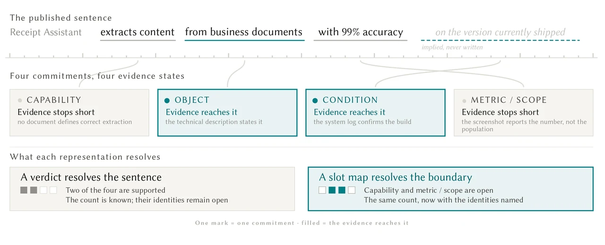
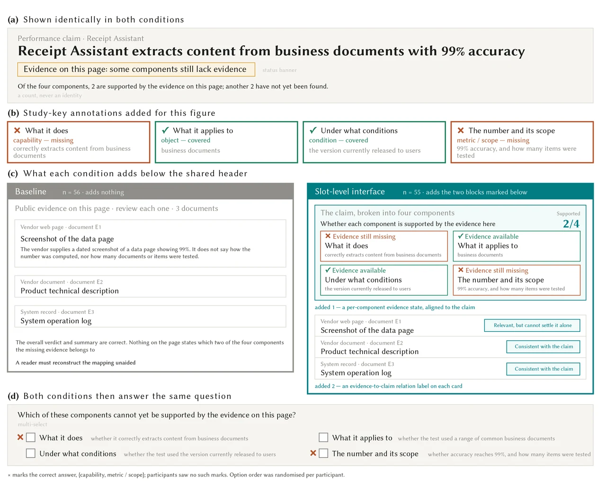
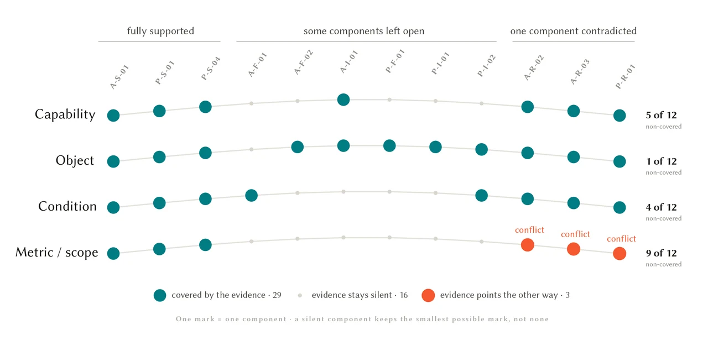
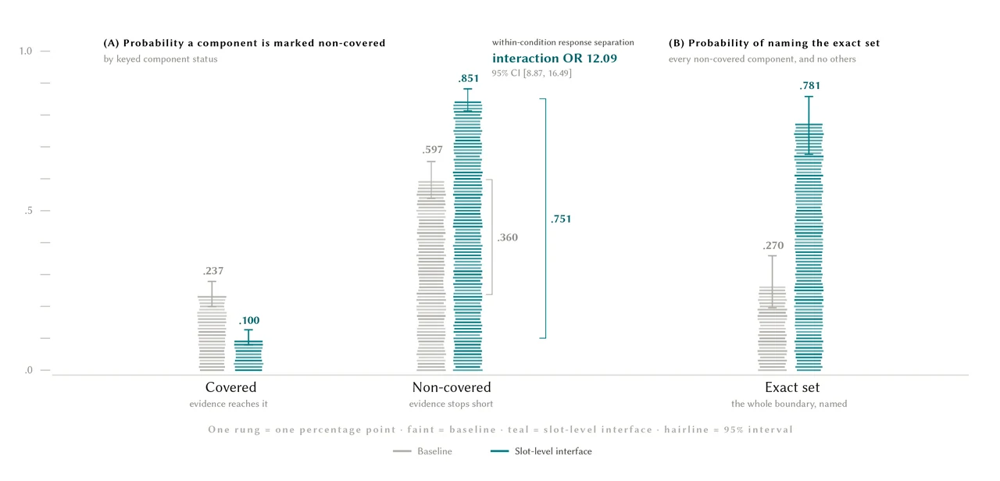
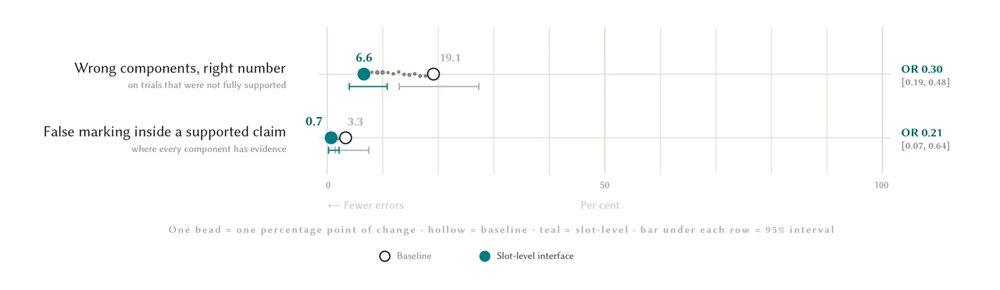

On this page
INQ–β: Evidence Boundaries
When Evidence Labels Become Answer Keys: Auditing AI Product Claim Evaluation
Tools & Technologies: Human–computer interaction, evidence evaluation, interface evaluation, scoring sensitivity
Under review at CHIIR 2027
Introduction
An interface can display which parts of an AI product claim are supported and use those same labels to score a reader’s answer. But what if the label refers to a different fact from the question, or the sources do not establish it? Evidence Boundaries revisits an earlier interface study to examine what its answer keys actually measure.

Concept
The interface divided each claim into capability, object, condition, and metric/scope, with covered, missing, or contradicted states. Both conditions showed the claim, evidence, global verdict and support counts. The panel condition additionally showed component states and evidence-relation labels.
One case illustrates the problem. A tool was described as intended for professional writers, and a vendor report said eight volunteers edited faster after using it. The question asked whether all tested participants were professional writers. Their occupations were unspecified, yet the displayed component and answer key said “covered.” A reader selecting “unsupported” therefore lost credit under that key.

Study
The audit retained the historical responses of 111 participants to 12 fictional claims: 1,332 trials and 5,328 component judgments. It compared the displayed proposition, the question being answered, and what the constructed source documents established.
Three retained readings produced seven shared candidate changes from covered to missing. Five fixed keys—the deployed key, the shared changes, and three individual readings—were then applied to the same responses. These are alternative readings for examining scoring sensitivity, not independently validated ground truth.

Findings
Under the deployed key, the panel–baseline difference in agreement on all four components was 40.9 percentage points. With the seven shared changes, it fell to 9.7 points. The corresponding difference in agreement on individual components fell from 18.4 to 12.7 points. Every affected item contributed to the reduction in complete-answer agreement.
The retained figures below document the earlier analysis under the deployed key. Their high agreement rates should not be read as evidence that readers independently verified the claims. The current paper examines how those scores change when the assumptions behind the key are reconsidered.


Rescoring leaves participants’ answers and the original displays unchanged. It does not show how people would respond to corrected labels. Historical allocation cannot be verified as random, and some retention decisions are incompletely documented.
The practical lesson is to record the precise proposition being judged, the supporting evidence and plausible alternatives before treating agreement with a displayed label as correct judgment. A component name shared by an interface and a question does not guarantee that they ask about the same fact.